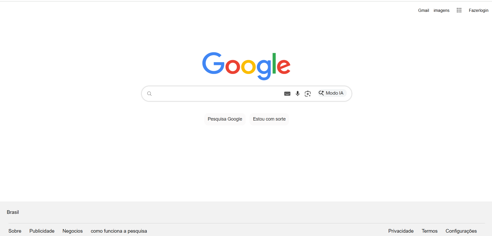

Projeto Amanda
Projeto desenvolvido por Amanda: possuindo tela de cadastro e tela de login com foco em usabilidade e harmonia de interface.

Demonstração prática dos projetos individuais desenvolvidos pela equipe com foco em usabilidade e boas práticas de desenvolvimento.
Projeto desenvolvido por Amanda: possuindo tela de cadastro e tela de login com foco em usabilidade e harmonia de interface.

Projeto desenvolvido por Guilherme: possuindo tela de cadastro e tela de login com design estruturado e validações limpas.

Projeto desenvolvido por Aylton: tela de navegação inicial do Google desenvolvida com precisão geométrica e fidelidade visual.
Desenvolvimento focado em lógica de negócio, arquitetura web e integração eficiente de funcionalidades de sistema.